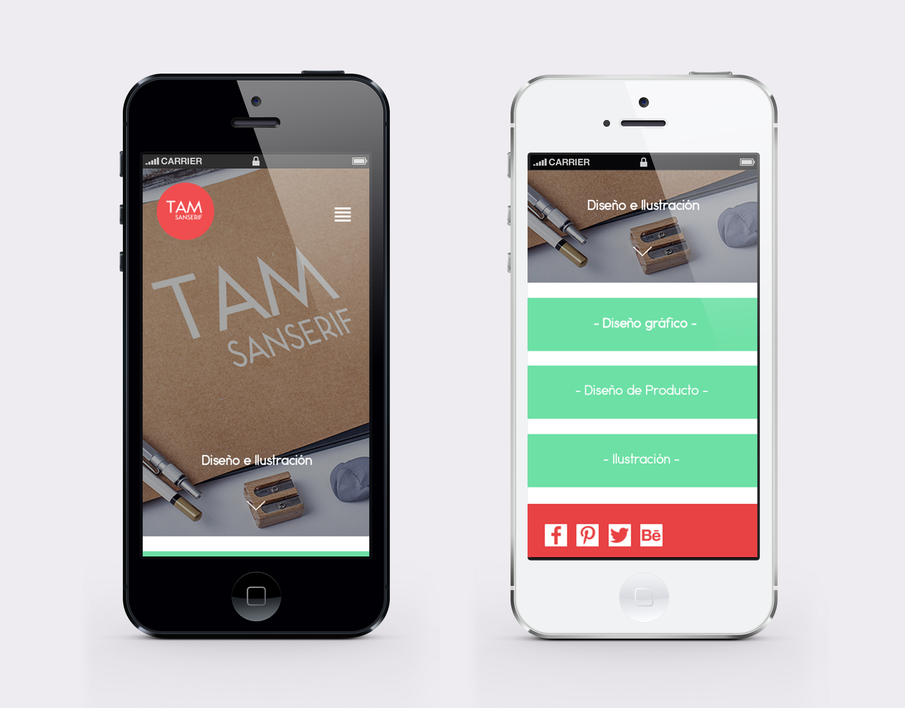
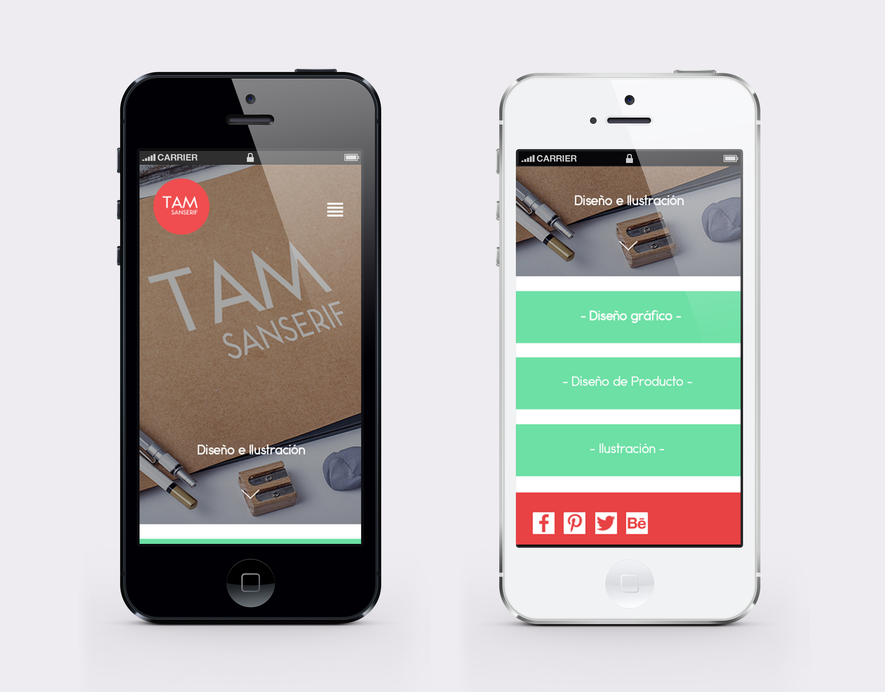

TamSanSerif
Página web tipo portfolio, diseño original que demuestra simplicidad pero llenando de colores la vista, muy al gusto de la diseñadora a la que se le prentende dar visibilidad. Todo el diseño gira entorno al logo, aspirando a jugar con la misma idea de este, proponiendo multitud de formas curvas y contrastes de colores.


 
